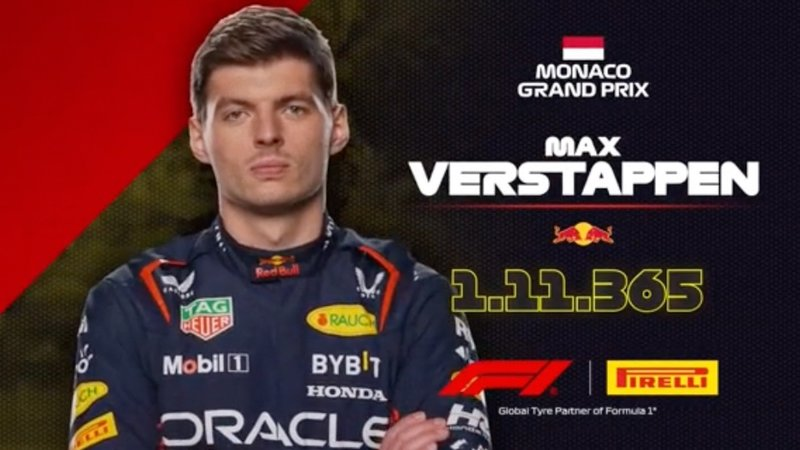
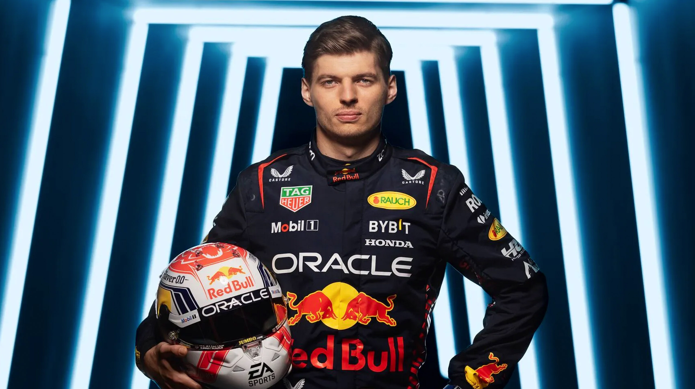

Du Du Du Max Verstappen | 2023
Press the picture!
Who is Max Verstappen?
Max Verstappen is a Formula One driver for the Red Bull Team. He was the youngest-ever competitor to join the Formula One, when he is 17 years old. He is extremely professional, and is often compared to other Formula One drivers like Lewis Hamilton and Lando Norris.

